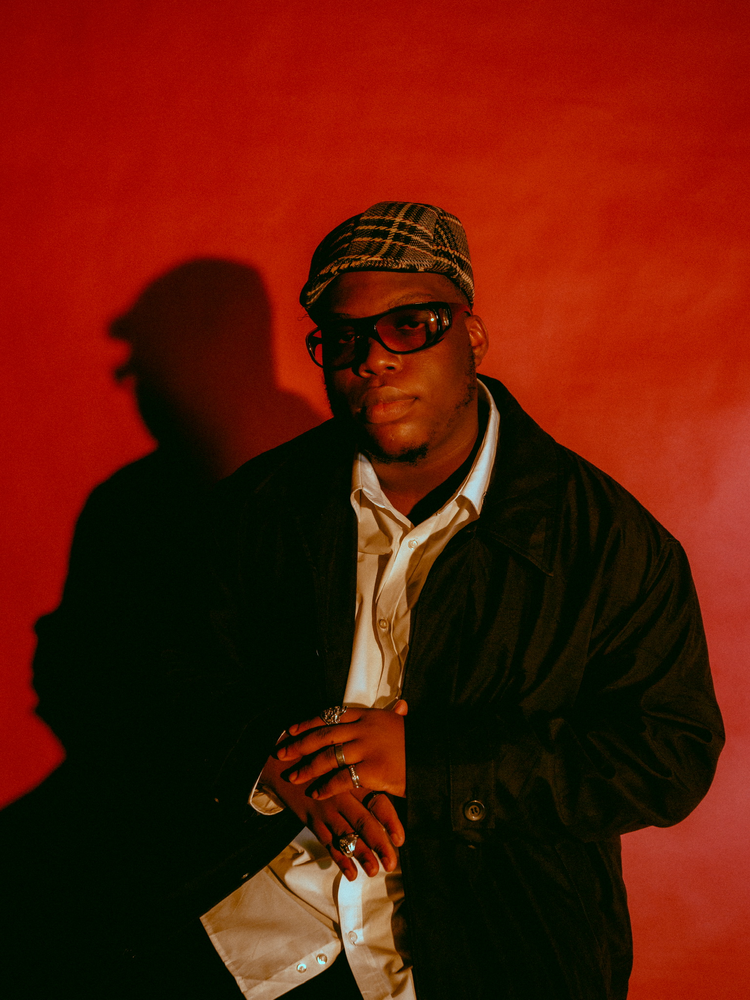

Trill's Bio
Babalola Awe, known as Trill Xoe, got into music production at 15 via his senior in secondary school, who introduced him to Fruity Loops and taught him some basics. Trill Xoe started as a Hip-Hop producer before leaving Nigeria for university on the island of Mauritius, where his closest friends were from various parts of Africa and was thus exposed to different African sounds. This, along with the rising "alte" scene back home, inspired Trill to push himself to improve his range of production. Trill Xoe is working hard to place himself as one of the most diverse African producers right now.